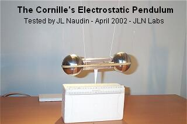
The purpose of this experiment is, firstly to replicate the original Patrick Cornille's Electrostatic Pendulum and secundly to indentify the real source of the "anomalous" thrust in his device with a deep investigation.
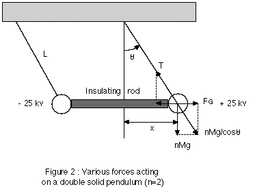
<< The experiment as shown in Fig.2 consists of two heavy metallic balls suspended by fine cotton wires to the ceiling of the laboratory. In order to keep the balls at a fixed distance D, an insulating rod is used between the balls. Therefore, the bi-filar pendulum with the two balls make a capacitor that moves as a solid with the Earth's velocity U = Ui where Ui is also the ionic velocity defined with respect to the ether frame.>> from THE ELECTROSTATIC PENDULUM EXPERIMENT WHICH PUMPS ENERGY FROM THE ETHER - by Patrick Cornille ( France )
These tests are conducted with full electronic HV Bipolar Power Supply which allows accurate Voltage and Current measurements. These tests are more accurate than the tests that I have already conducted on September 11, 1997 with a simple Wimshurst Machine.
TEST #1 : FULL REPLICATION OF THE ORIGINAL SETUP
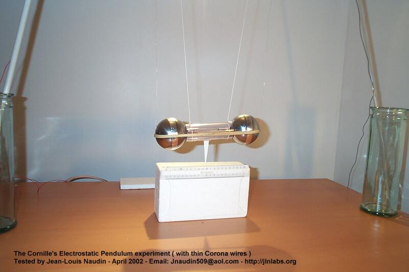
Tested apparatus description : The Cornille's electrostatic pendulum is composed of two steel balls ( 70mm diam, 700g weight ) separated by a plastic cylinder (105mm length). These 2 two steel balls are electrically connected through a 40 KV spark gap placed between them and inside the plastic cylinder. A rubber band maintains together the steel balls and the plastic cylinder as shown in the photos above. The Apparatus is suspended through two thin ropes to the lab ceiling and two thin copper wires ( 12/100 mm diam ) are used to convey the High Voltage. The total weight of the apparatus is 1450 g and the total lenght of the pendulum is 1200 mm ( see the full diagram, below ).
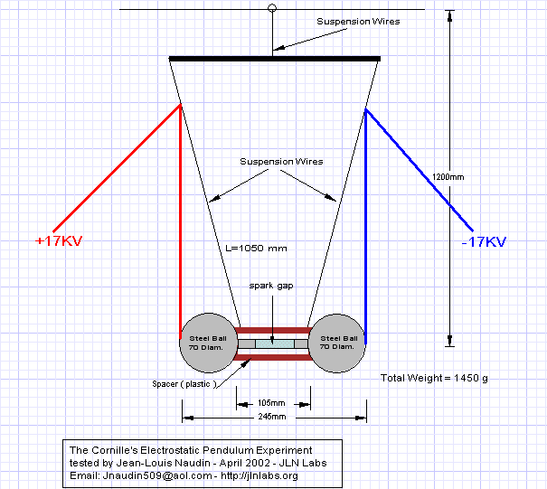
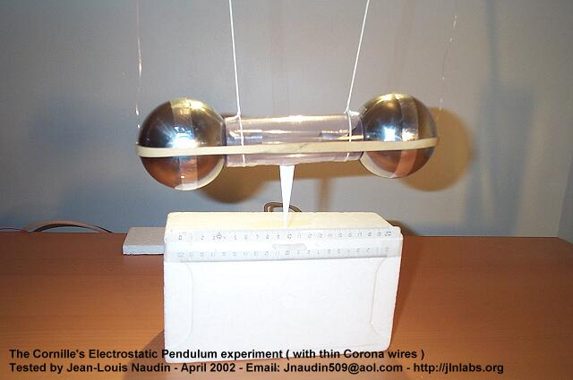
TEST #1 - RESULT : The High Voltage ( 34 KV DC bipolar ) has been choosen so as to be lower than the threshold voltage of the spark gap ( 40 KV ). There is a weak leakage current inside the spark gap which contributes to provide a weak current flow through the two masses ( the 2 steel balls ). When HV pulses are sent ( at a period of about 2 seconds ) the Cornille's pendulum oscillates with an amplitude of +-10mm from its neutral position.
Wire specification |
Excitation Voltage |
HV Current |
Oscillation Period |
Pulse Power |
Thin copper wires (12/100 mm) |
34 KV bipolar |
660 uA |
2 sec |
23.1 Watts |
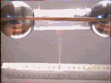
THE TEST#1 OF THE ELECTROSTATIC PENDULUM CONFIRMS THE ORIGINAL OBSERVATIONS DONE BY PATRICK CORNILLE HIMSELF ON JULY 27, 1996 : When HV pulses are sent to the electrostatic pendulum, a stimulated force sets the device into motion.
To see the videos, the free
downloadable RealPlayer is required 
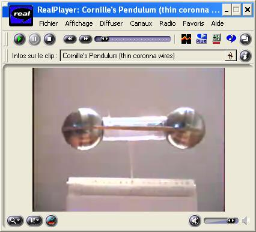
Click on the
picture to see the video of this test ( 344 kb )
TEST #2 : THE CORONA WIRES HAS BEEN REPLACED BY INSULATED WIRES
This test is similar to the previous test. Only the thin corona wires have been replaced by full insulated wires.
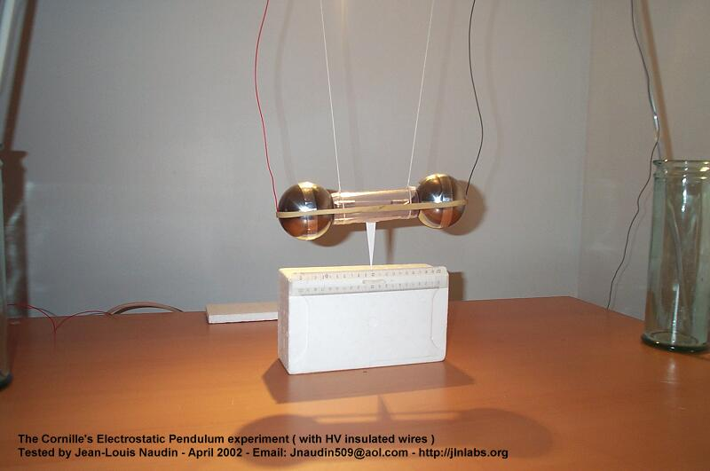
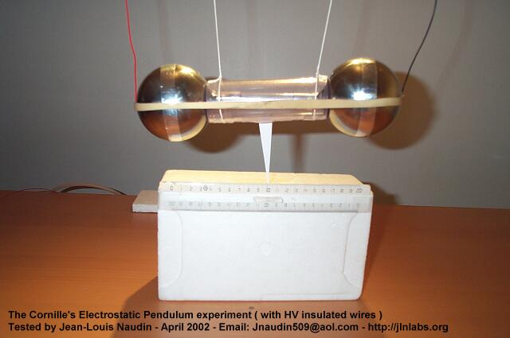
TEST #2 - RESULT : As in the previous test, the High Voltage ( 34 KV DC bipolar ) has been choosen so as to be lower than the threshold voltage of the spark gap ( 40 KV ). The weak leakage current inside the spark gap contributes to provide a weak current flow through the two masses ( the 2 steel balls ).
When HV pulses is sent ( at a period of about 2 seconds ) the Cornille's pendulum doesn't oscillate. There is NO OBSERVABLE MOTION of the pendulum.
Wire specification |
Excitation Voltage |
HV Current |
Oscillation Period |
Pulse Power |
Full Insulated wires |
34 KV bipolar |
510 uA |
NA |
17.85 Watts |
In the TEST#2 OF
THE CORNILLE's ELECTROSTATIC PENDULUM with fully insulated wires,
NO
OSCILLATION of the device has been observed.
To see the videos, the free
downloadable RealPlayer is required 
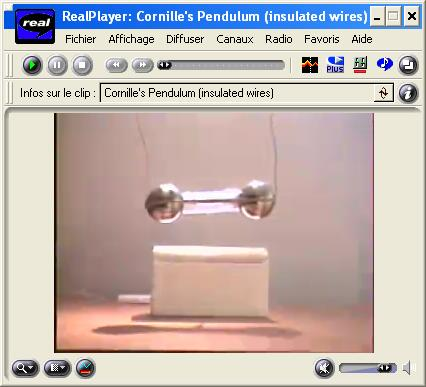
Click on the
picture to see the video of this test ( 282 kb )
TEST #3 : WITH INSULATED WIRES WITH SPARKS ( generation of pulses of current )
In this experiment, the High Voltage has been choosen so as to get a spark when the HV Power supply is switched on. The HV current pulse is about 3 mA and flows through the two masses ( the 2 steel balls ) as shown in the photo below.
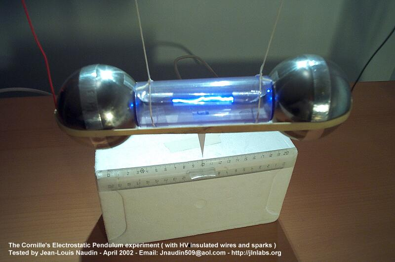
TEST #3 - RESULT : The High Voltage ( 50 KV DC bipolar ) has been choosen so as to be higher than the threshold voltage of the spark gap ( 40 KV ). There is a strong current ( 3 mA ) inside the spark gap during the pulse, this current flows through the two masses ( the 2 steel balls ). When HV pulses are sent ( at a period of about 2 seconds ), the Cornille's pendulum doesn't oscillate. There is NO OBSERVABLE MOTION of the pendulum.
Wire specification |
Excitation Voltage |
HV Current |
Oscillation Period |
Pulse Power |
Full Insulated wires |
50 KV bipolar |
3 mA |
NA |
150 Watts |
In the TEST#3 OF
THE CORNILLE's ELECTROSTATIC PENDULUM with fully insulated wires
and strong current pulses,
NO
OSCILLATION of the device has been observed.
To see the videos, the free
downloadable RealPlayer is required 
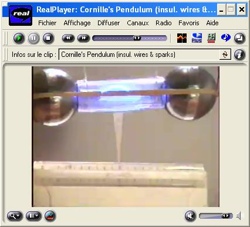
Click on the
picture to see the video of this test ( 262 kb )
TEST #4 : WITH CORONA WIRES INSULATED FROM THE STEEL BALLS.
In this new test, the two electrical connections of the thin wires on the two masses ( the steel ball ) have been fully insulated with a thick polystyren block and an adhesive tape as shown in the photos below. In this case, there is NO POSSIBLE CURRENT FLOW through the two masses and there is only a leakage current in the air and in between the two thin wires.
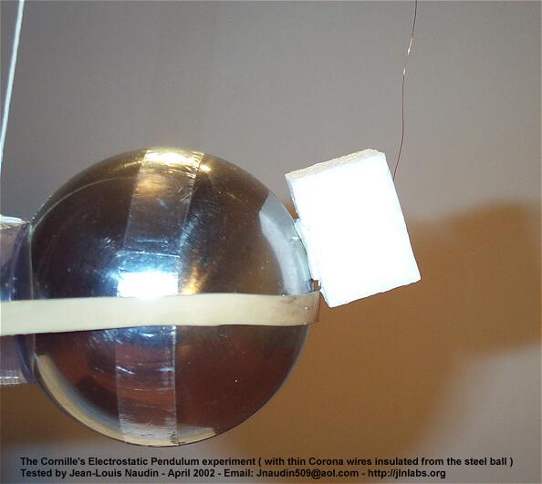
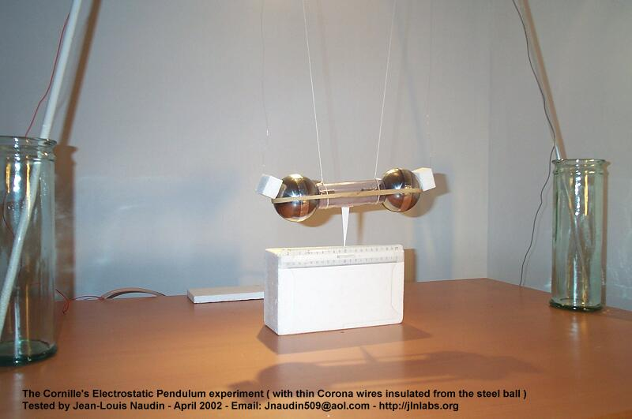
TEST #4 - RESULT : The High Voltage ( 34 KV DC bipolar ) has exactly the same value than in the TEST#1. When HV pulses are sent ( at a period of about 2 seconds ) the Cornille's pendulum oscillates at the same period and with the same amplitude than in the TEST#1.
Wire specification |
Excitation Voltage |
HV Current |
Oscillation Period |
Pulse Power |
Thin copper wires (12/100 mm) |
34 KV bipolar |
570 uA |
2 sec |
19.95 Watts |
In the TEST#4 OF
THE CORNILLE's ELECTROSTATIC PENDULUM
with the
thin copper wires electrically disconnected from the two masses of the
pendulum,
the
Cornille's pendulum oscillates with the same
amplitude than the TEST#1.
Additional comment from JL Naudin :
- How a such symmetrical configuration ( two equal (diameter and length) thin spaced wires ) is able to generate a directional thrust ?
This can be simply explained by the fact that the ionic mobility of positive ions in the air, 1.32 (cm/sec)/(volt/cm), is less than the ionic mobility of negative ions in the air, 2.51 (cm/sec)/(volt/cm). The concentration of the electric field near the thin wire produces a corona discharge. Positive ions are generated at the wire, the wire positively charged repels the ions and thus the force on the wire is roughly equal to that on the ions. The negative/positive mobility of ions ratio is about 1.9, so the force on a positive conductor is greater than on a negative conductor, this is the cause of the generation of an unidirectionnal thrust... The ES pendulum goes to the LEFT when the HV is switched ON.
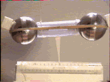
| This test proves definitely
that the thrust observed in the TEST#1 is only the result
of a
simple EHD Thrust ( by the corona discharge in the air ) between the two thin copper wires. |
To see the videos, the free
downloadable RealPlayer is required 
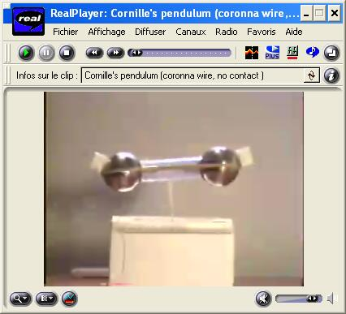
Click on the
picture to see the video of this test ( 352 kb )
CONCLUSION OF TESTS
The Cornille's Electrostatic Pendulum Experiment - Tested by JL Naudin on April 2002
| TEST # | MOTION OBSERVED | Wire specification |
Excitation Voltage |
HV Current |
Period |
Pulse Power |
| 1 | YES | Thin copper wires (12/100 mm) |
34 KV bipolar |
660 uA |
2 sec |
23.1 Watts |
| 2 | NO | Full Insulated wires ( No Spark ) |
34 KV bipolar |
510 uA |
NA |
17.85 Watts |
| 3 | NO | Full Insulated wires with Spark |
50 KV bipolar |
3 mA |
NA |
150 Watts |
| 4 | YES | Thin copper wires isolated from the masses |
34 KV bipolar |
570 uA |
2 sec |
19.95 Watts |
| This serie of tests
about the Cornille's electrostatic pendulum has fully
demonstrated that the real source of
the thrust induced on the device and
responsible of its oscillations is only produced by a simple
EHD Effect.
This EHD Effect is generated by the corona discharge
effect in the air between the two thin copper wires which
carry the High Voltage. These EHD
forces are mechanically transmitted
to the masses and produce a common parametric excitation
of this pendulum. The shape and the structure of the
masses have no importance in this case ( conductive or
not conductive, single or two masses, spaced or not
spaced ). Additional comments from Scott Little ( 09-04-02 ): "The reason the forces are not symmetrical is due to the fact that the positive wire (on the left) is NEXT to a negative wire (on the right). When the HV is on, negative ions are created around the negative wire and, due to their higher mobility, they move over to the positive wire quickly, exerting only a short-duration electrostatic attraction force for the positive wire. But the positive ions created at the positive wire move slowly and thus create a longer-acting electrostatic attraction force for the negative wire. The result is a force towards the left when the HV is on. " |
Reference documents :
 Email : JNaudin509@aol.com
Email : JNaudin509@aol.com
Back to the Electrostatic Pendulum home page